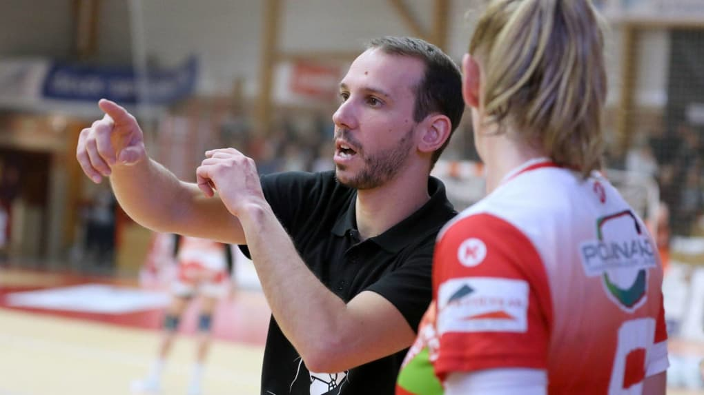
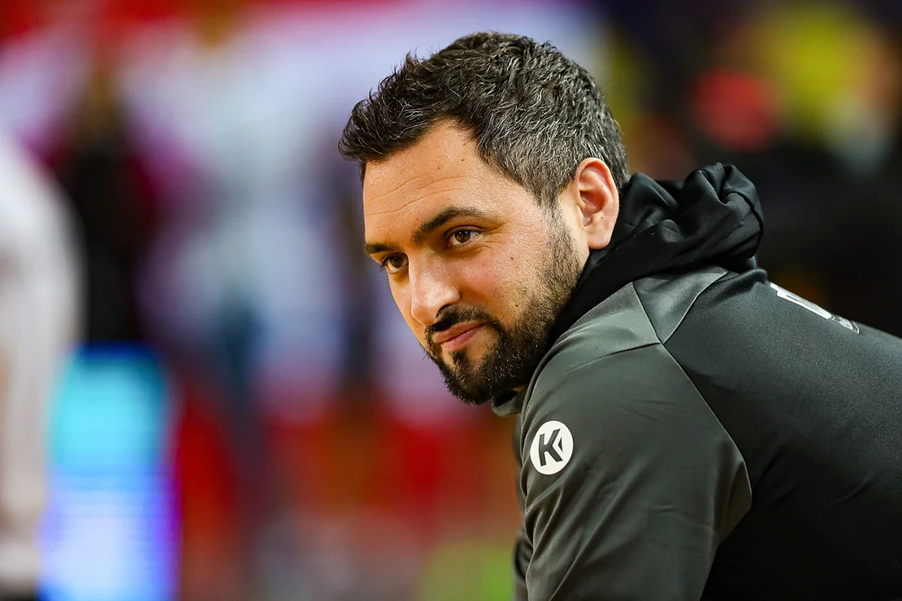

Article 1: 3 softs skills indispensables pour les coachs
1. Une excellente aisance relationnelle
L’aisance relationnelle est une compétence large qui regroupe de nombreux soft skills : l’écoute, le relationnel, la bienveillance, l’intelligence émotionnelle, l’adaptation aux interlocuteurs que vous avez face à vous (joueurs(ses), dirigeants, sponsors...) etc. Toutes ces compétences comportementales sont essentielles pour tous les entraîneurs qui veulent bien faire leur travail. Quel que soit leur niveau (jeunes, adultes, nationales, hommes, femmes…) Car tous ont un point commun : l’humain.
2. Une maitrise de la communication
L'entraîneur de handball est un poste transversal au club. Il occupe une fonction pivot. Il relie les dirigeants aux joueurs(ses), les équipes entre elles, l’interne à l’externe. Il est en contact avec des interlocuteurs variés : les dirigeants, les sponsors, les parents, les agents, les bénévoles… Il est au cœur de la stratégie du club qu’il décline au niveau de l’organisation humaine. Il peut être amené à mettre en œuvre des choses impopulaires
L'entraîneur est au cœur de la stratégie du club, qu'il décline à plusieurs niveaux
3. Une objectivité en toutes circonstances
Plus facile à écrire qu'à faire... Dans certaines situations, l’objectivité du coach peut être menacée. Il peut lui être difficile de garder un esprit critique et la prise de recul nécessaire face à un(e) joueur(se) en difficulté ou une question collective à trancher. C’est d’autant plus délicat dans une petite structure, comme il y en a partout, où la relation formelle se dispute avec la relation amicale informelle. Comment réagir face à un(e) joueur(se) toujours en retard aux entraînements (alors que la plupart ne sont pas professionnel(les)) ? Comment faire passer un refus de demande pour un déplacement ? Comment trancher sur les dates de départ en congés au sein de l'équipe ? Un bon entraîneur sait rester neutre, impartial et objectif en toutes circonstances.
